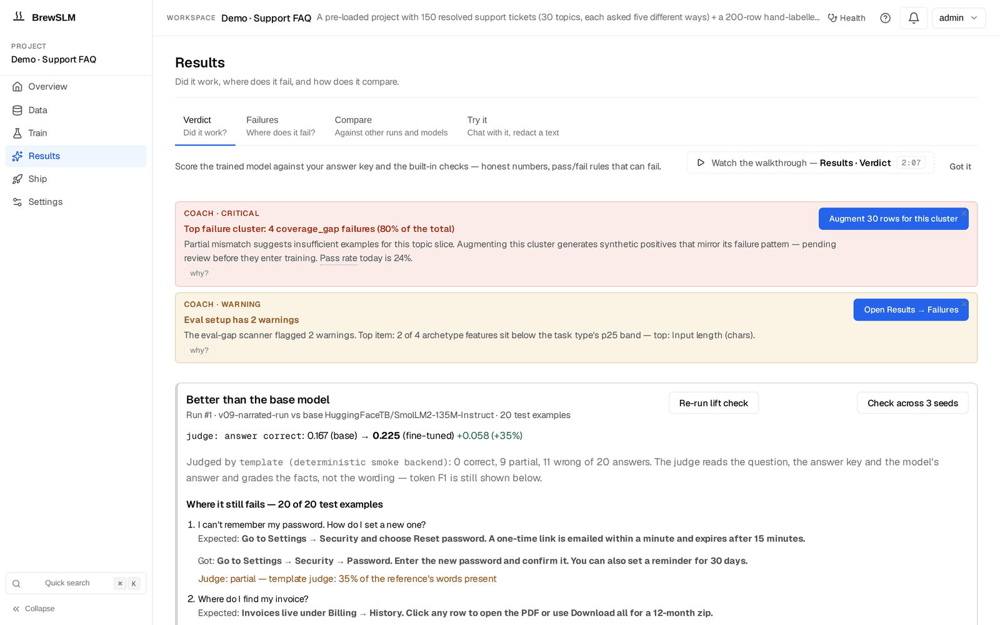

Build a code review nitpicker with the code-review recipe
By the end of this tutorial you'll have a small language model that reads a code diff and writes 1-3 review comments in your team's voice — catching the style nits, the dropped-null-check, the missing tests, the wrong logger call, the convention drift. Not replacing human review; lifting the floor. The boring stuff gets caught automatically so your senior engineers focus on architecture and intent. Runs on a single small GPU, deployable as a GitHub Action that drafts comments on every PR for a human reviewer to keep or drop.
Before you start
This tutorial assumes BrewSLM is running locally at http://localhost:5173 with an admin user signed in. If you haven't done that yet, complete Tutorial 0 — Set up BrewSLM and your first project first. It takes ~20 minutes and is the prerequisite for every tutorial in this track.
You'll also want, before you start: ~200 (diff, review) pairs mined from your team's GitHub PR archive — the merged PRs from the last six months are the highest-signal source you have. Public datasets work as warmup but your own archive is what teaches the model your voice.
Terms you'll see in this tutorial (click to expand)
- Recipe
- The training-plan template behind a project. For this tutorial:
code-review(shown in the app as the task type Code Review Nitpicker). Defines the base model + adapter + pass/fail-rule defaults for diff-to-review-comment generation. - Adapter
- The mapping layer that converts your CSV/JSONL rows into training-ready fields. For code-review, the adapter is
qa-pair— it reads (diff, review) pairs treating the diff as the input and the review comment as the output. - Gold set / answer key
- Your trusted reference rows — the "exemplary" reviews from your senior engineers. In BrewSLM this is the answer key, under Data → Labels (the Answer key card). Aim for 100+ rows; the recipe's
min_rows_recommendedis 100 but more is better when the target is voice. - Synth playbook
- A platform-provided generator that expands your gold set with controlled variations. Code-review ships three: paraphrase (new code with the same issue), hard negatives (clean-looking code with a subtle bug), and cluster-targeted (failure-mode patching).
- LLM judge
- A second model that reads the diff, the reference review and the candidate review, and scores the candidate 1–5 on a generic rubric (5 = fully correct and complete … 1 = incorrect). A row passes at 4 or above. It is the code-review scaffold's headline rule because exact-match doesn't apply when two valid reviews of the same diff use different words. It does not score theme, actionability or voice separately.
- Field-match scoring
- The scoring mode the code-review recipe runs in. Compares the candidate output to the reference with token-level metrics (F1, exact match); the LLM judge pass rate comes from a separate LLM Judge eval you run yourself.
- Critique theme
- What the review is fundamentally about — "missing null check", "wrong logger level", "test coverage gap", "off-spec naming convention". A useful way to read failures by hand; the app's judge does not score it.
- Suggested change
- GitHub PR review feature: a review comment holding a
```suggestionblock that people with write access, including the PR author, can apply with one click. The comment is visible on the PR like any other review comment.
This is the BrewSLM workflow for any project where the model needs to read code and write a comment about it in someone's voice — PR review, internal lint-explanation, style-guide enforcement, security-review note generation, deprecation notice writing. The recipe stays the same; only the gold set's voice changes. Train one model per team to inherit that team's review culture.
The end state is the model you'd actually deploy alongside your existing CI: small enough to run on a self-hosted runner, fast enough to comment within seconds of the PR opening, and tuned to your team's conventions in a way no off-the-shelf tool can match.
What you'll build
A code-review model that takes a unified-diff hunk as input and produces 1-3 review comments as output. Concretely:
Input:
@@ -42,6 +42,11 @@ def handle_request(req):
if not req.user:
return error_response(401)
+ if req.payload == None:
+ return error_response(400)
+
+ logger.info(f"Processing request for {req.user.email}")
+
result = process(req.payload)
return success_response(result)Output:
1. Use `is None` instead of `== None` for the null check — `==` calls __eq__ which can be overridden and is slower.
2. Log line leaks user email into INFO-level logs. Either drop the email or move to DEBUG to stay GDPR-compliant.
3. Consider whether a 400 is the right code here — empty payload may indicate a client retry; 422 reads better.The model is a fine-tuned LoRA adapter on top of Qwen/Qwen2.5-Coder-1.5B-Instruct (the recipe's suggested base). Latency: a few seconds per diff on a single GPU (a rough guide; yours will differ with hardware and diff size); the bigger Qwen2.5-Coder-3B-Instruct alternative reads more context and writes more nuanced reviews, and is slower. Deployable as a GitHub Action that runs on PR open / PR update.
Key idea
The code-review recipe trains the model on voice, not on the universal truth of what makes a review correct. Two reviewers writing valid critiques of the same diff will say different things in different words; the goal isn't to predict the canonical review, it's to write reviews that sound like your team. That's why the code-review scaffold leans on an LLM judge — it scores how correct and complete the candidate is against the reference, so a correct paraphrase can still pass where token overlap would fail it.
Why a small model (not a hosted frontier model, not regex)
Three options exist for automated PR review. Use this comparison:
| Approach | Quality | Latency in CI | Cost at scale | Privacy | Voice match |
|---|---|---|---|---|---|
| Lint / regex (eslint, ruff, custom plugins) | Catches the textbook patterns | <1s | Free | Self-hosted | Generic — every team gets the same comments |
| A hosted frontier model behind an API | Strong but verbose; tends to invent issues | Seconds per diff | A fee per PR: at an illustrative $0.10-0.50 per PR, 200 PRs/week (≈ 867/month) is about $87-433/month | Every diff leaves your network | Generic chatbot voice |
| Small fine-tuned model (this tutorial) | Strong on patterns your team flags; weaker on novel issues | Seconds or less | No per-PR fee; your own GPU time | Self-hosted; your code never leaves the network | Trained on your team's archive — sounds like your team |
Lint catches what you can encode as rules; nobody has a regex that captures "this looks like a feature flag check but the flag is already removed from config" or "the test name implies behaviour the test doesn't verify". Frontier models are good at language but their latency makes them awkward in CI, their cost compounds at high PR volume, and shipping your proprietary code to a third-party API is a non-starter for many enterprise deployments. Small fine-tuned models occupy the gap: fast enough for CI, private enough for proprietary code, and — crucially — voice-tunable in a way no off-the-shelf tool is.
Choose your dataset
You need (diff, review) pairs. The diff is a unified-diff hunk (the bit between @@ -start,len +start,len @@ markers); the review is the comment text a human reviewer would write. Four sources, in order of value:
- Your own internal PR review archive (by far the highest value)
- Mine 6 months of merged PRs from your team's GitHub via
gh api repos/<org>/<repo>/pulls?state=closed+/pulls/<n>/comments. Filter for inline comments on diffs (not top-level PR comments). This captures voice + conventions a public dataset never will. A 50-engineer team typically produces 2-5k inline review comments per month — 6 months gives you 12-30k candidate rows, easily enough. - The CodeReviewer dataset (warmup / pretraining)
- The CodeReviewer paper's data release holds its fine-tuning sets: hundreds of thousands of review comments on code changes across 9 languages (the paper's larger pre-training corpus was not released). No explicit dataset licence is stated, so check before commercial use. Useful as a warmup pass before fine-tuning on your own data — gets the model speaking "review language" generically before you teach it your voice.
- CodeSearchNet (unlabeled diffs)
- The CodeSearchNet code corpus is unlabeled function-level code in 6 languages. Useful if you need additional diff context for the synthetic playbooks but don't have enough archive of your own. Pair with a teacher model to generate review-like comments as a bootstrap step.
- Open-source merged PRs (for solo devs / new teams)
- If your team is too new to have a meaningful archive, mine merged PRs from large open-source projects (Linux kernel, Postgres, React, Django, Rust compiler). Public, plentiful, and the reviews are typically high-quality. Trade-off: you inherit the open-source project's voice, not yours.
How many rows do you need?
100 high-quality rows is the recipe's minimum. 300-500 is comfortable. Past 1000 you hit diminishing returns — voice converges around 500 rows. Filter aggressively before training: half your archive will be "LGTM" or "nit: fix this typo" — those are signal-weak. The valuable rows are the 1-3 sentence critiques that explain a real concern.
Ingest and map
In BrewSLM, create a new project: Projects → + New Project, give it a name and describe the job in What problem do you want this model to solve? ("read a code diff and write 1-3 review comments in our team's voice"). The project opens on its Overview. Then pick the recipe: Train → More options → Task type → the Code Review Nitpicker card → Use this task type. It sets the adapter (qa-pair), task profile (instruction_sft — Data → Labels → What kind of task is this? will read Instruction following) and scoring mode (field_match). The code-review rule set (LLM-judge headline rule, F1 as a sanity check) is only a draft until you click Use scaffold after your first run (see Evaluation). Until then the project is scored against the domain profile's rule set (evalpack.domain-profile: F1 ≥ 0.65, LLM-judge pass rate ≥ 0.75 and safety ≥ 0.90 required), whose F1 floor is too high for review comments that make the right point in other words.
Open Data → Sources → Import dataset (auto-mapping) → Import dataset →. The wizard walks Source → Task type → Map → Preview & Confirm; point it at your CSV or JSONL. The expected shape is two required fields plus an optional rationale:
{
"diff": "+ if (user.id == null) {\n+ return;\n+ }",
"review": "Use `===` for null check, or `if (user.id != null)` to also catch undefined.",
"rationale": "JS equality nit; the loose-equality form coerces both null and undefined."
}The wizard's Map step scans the columns and matches them against the recipe's shape signature (input columns named like diff/patch/code/file/snippet, output columns like review/comment/feedback/suggestion). Preview & Confirm shows the accepted sample rows; click Import N row(s) to project when the preview looks right.
✓ Checkpoint: Data → Sources lists the import (Details → Sources summary shows the row count per source). Imported rows are written as accepted training rows straight away; they don't pass through the Review queue. The goal ledger on the Readiness overview (same Details drawer) turns its data_ready row green once you have 50 training rows; below that it lists a blocker. If the mapping is wrong, the preview rows will be empty or mis-shaped — go Back to the Map step and pick the correct columns before importing.
Don't strip the diff context
It's tempting to feed just the changed lines (the +/- rows) to the model. Resist that. The hunk header (@@ -42,6 +42,11 @@ def handle_request(req):) and the surrounding unchanged lines are critical context — a critique like "this null check is redundant because line 41 already validated req.user" requires the model to see line 41. Keep at least 3 lines of context above and below; the standard git diff -U3 format is the right default.
Cleanup
Open Data → Prepare and its Details → Quality and safety section. For code-review data, the cleanup pass is mostly about noise removal:
- Strip auto-generated comments. Your archive will include CI-bot comments ("✅ Build passed", "Codecov: -0.2%"), Dependabot dependency-bump notices, Snyk security-scan summaries, AI-assistant suggestions accepted as comments. None of these are reviews; all of them are noise. Filter by author handle (drop rows where commenter ends in
[bot]) and by content heuristics (drop rows starting with markdown badge images). - Drop LGTM-only rows. "LGTM", "ship it", "👍", "approve" — these are signal-zero for training a model to write reviews. Leave them out of the gold set. No playbook turns them into useful rows: the hard-negatives playbook (see the synth section below) writes buggy code with a review that names the bug, not LGTM rows.
- Normalise diff whitespace. Mixed line endings (CRLF vs LF), trailing whitespace on diff lines, smart-quotes in review text. The near-duplicate signal in Data health and leakage (Data → Split → Details) will catch many of these, and Prepare's one-click autofixes apply the fix — review one cluster at a time.
- Deduplicate near-identical reviews. The same engineer often writes the same review on similar diffs ("add a docstring", "extract this magic number"). Keep one canonical instance per pattern — train/test leakage on duplicate reviews inflates F1 scores artificially.
- PII in commit history. Reviews sometimes quote internal Slack messages, customer names, or production credentials accidentally pasted in. Walk the Quality and safety section's PII flags and decide per-row (Prepare's Redact PII & Secrets checkbox redacts per field on Clean All Documents).
Skip nothing here. The code-review model inherits whatever signal you don't filter — if half your training rows are bot comments, the model will learn to write bot comments.
Pick the recipe: code-review or qa-sft or classification?
BrewSLM ships several recipes that could plausibly handle review-style tasks. Use this decision tree:
| Question | code-review | qa-sft | classification |
|---|---|---|---|
| Output is free-text 1-3 sentences? | ✓ (the recipe's primary shape) | ✓ (works but no diff-specific scaffold) | ✗ (classification emits a label, not text) |
| "Correct" review varies between reviewers? | ✓ (LLM-judge eval handles many-valid-answers) | (F1-led eval penalises paraphrase) | (forced into a label vocabulary) |
| Need to capture team voice / conventions? | ✓ (gold seeded from your archive) | (possible but no voice-targeted playbooks) | ✗ (label vocabulary can't hold voice) |
| Diff is the input shape? | ✓ (recipe defaults to diff column) | (generic input) | (generic input) |
| Decision is "block / approve / nit"? | (model produces text; classification fits decisions) | (awkward) | ✓ (3-class label) |
| Just want a yes/no "is this code risky"? | ✗ (overkill) | ✗ | ✓ (binary classifier) |
For the canonical "comment on diffs in your team's voice" use case: code-review wins because (a) the LLM-judge eval handles the "many valid reviews" problem that breaks F1-led recipes, (b) the scaffold expects a diff input + review output without forcing you to invent mapping, and (c) the three code-review playbooks target recurring issues, subtle bugs, and failure clusters specifically. Sticking with code-review for the rest of this tutorial.
Domain packs (the language-specific gap)
BrewSLM doesn't ship a code-review domain pack. It ships one generic domain pack (general-pack-v1, under Settings → Tools → Domain Packs); the domain presets in the create dialog (Legal, Customer Support, Healthcare, Finance) and the matching domain eval packs are content domains, not engineering domains. For code-review you're operating on the recipe defaults, which is fine for v1.
A worthwhile follow-up project is a custom pack for your team's conventions: cleaning rules tuned to your CI bot author handles and language-specific severity ladders ("nit / suggestion / blocker" for JS vs "info / warn / error" for Go). Two things you might want are not possible today: the synth playbooks have no prompt editor, so you can't inject a style_guide.md excerpt into them, and the LLM judge's rubric is fixed, so it can't check your specific conventions.
If you're shipping this to a security team or to multiple language verticals (one model per language), packaging the conventions as a domain pack pays back fast. The platform's pack framework is general-purpose; the recipe is one input among many.
Build the answer key (gold set) — exemplary reviews + LLM-assisted promotion
The answer key — BrewSLM's name for the gold set — is where the model's voice comes from. Two complementary paths, both worth running:
Path A — manual seeding from "exemplary" reviews
Pick your 3-5 senior engineers (the ones whose reviews other engineers learn from). Walk their last 50 PR reviews each. Grab the inline comments where:
- The reviewer raised a real concern with a concrete suggestion.
- The PR author acknowledged the comment (replied "good catch" / "fixed in next push" / made the change).
- The comment is 1-3 sentences — long enough to explain, short enough to read in a glance.
Collect each one as a row: the diff context (4-6 lines around the comment line) as the input, the comment verbatim as the expected answer, and a one-line rationale tag (style-nit, bug-suggestion, test-gap, convention, security). Spend 60 minutes here. These ~50-100 rows are the most important data in the project — they imprint voice on the rest.
Entering the rows: one at a time in the card, or in bulk through the API
On Data → Labels the Answer key card has an add-row form for code-review projects with two multi-line fields: Input (paste the diff context exactly as the model will see it; it is saved untrimmed, so leading spaces and line breaks survive) and Expected output (the review), plus a difficulty. Rows go to the Practice answer key unless you pick Final in the card's selector. The form has no rationale field, and the LLM generation panel is not offered for code-review. For 50-100 rows, or to keep the rationale tags, add them through the API instead. Save them as answer_key.json, with the diff as question and the review as answer (the same two fields the form fills):
{
"dataset_type": "gold_dev",
"pairs": [
{ "question": "@@ -42,6 +42,11 @@ def handle_request(req):\n...",
"answer": "Use `is None` instead of `== None` for the null check.",
"rationale": "style-nit" }
]
}Then log in and post the file (gold_dev is the Practice answer key, gold_test the Final answer key; the password is the API_KEY from backend/.env; replace sk-mock-admin-key below with your API_KEY if you changed it):
TOKEN=$(curl -s -X POST http://localhost:8000/api/auth/local/login \
-H 'Content-Type: application/json' \
-d '{"username": "admin", "password": "sk-mock-admin-key"}' | jq -r .token)
curl -s -X POST http://localhost:8000/api/projects/<project id>/gold/import \
-H "Authorization: Bearer $TOKEN" -H 'Content-Type: application/json' \
-d @answer_key.jsonThe rows then show in the Answer key card's entry count and in the ledger's gold_set row.
Path B — LLM-assisted promotion from your full archive
Your full PR archive is too large to hand-curate. For the bulk pass, an out-of-band scoring step works well — the platform doesn't bundle a "rank by quality" UI, so you'll script this against your teacher backend directly:
- Bulk-import your filtered PR review archive (post-cleanup) into the project.
- Write a short script that sends each (diff, review) pair to a teacher model (a local model, or a cloud one behind an API). Prompt the teacher to score the pair on three axes of your own (concrete suggestion present, voice matches team norm, comment is actionable) and return a 0-3 score per axis. Aggregate the scores per row.
- Sort by aggregate score and spot-check the top 20% before importing it: rows imported through Data → Sources → Import dataset are accepted straight into training and never reach the Review queue. Put the best of them in the answer key with the API call above.
This turns most of a day of manual gold-curation into a much shorter session of scripting + review (a rough guide; yours will differ). The trade-off: the teacher's score is a proxy, not a verdict. Spot-check 30 of the promoted rows manually before training; if more than 20% of those feel off-voice, tighten the teacher prompt and re-rank.
✓ Checkpoint: the Readiness overview ledger (Data → Sources → Details) should show its gold_set row green at ≥ 100 answer-key rows. Any count below 100 shows "N answer-key rows · 100 recommended" and adds a blocker. If the row is grey, nothing landed — open Data → Labels and check the Answer key card's entry count.
Don't skip the rationale tags
The rationale field is optional in the schema but valuable in practice. Tagging each gold row by category (style-nit / bug-suggestion / test-gap / convention / security / perf) lets you break eval failures down by category yourself later — "the model is strong on style nits but misses test-coverage gaps". The app's failure clusters don't read the tag, so this is a manual analysis over the exported eval rows; without the tags it isn't possible at all.
Splitting train, validation, test — by repo or author, not random
This is where the code-review recipe diverges sharpest from tutorial 1 and 2. Don't use a random split. Reviews by the same engineer are stylistically correlated; the same engineer's reviews appearing in both train and test inflates eval scores because the model can essentially "recognise" the reviewer's voice rather than generalising the critique reasoning.
Data → Split (the Train / Val / Test Split form, Run Split) cuts a random split off the ratios + seed — and its Disjoint By Field (optional) input is exactly the guarantee this section wants: give every row a key column, name it there, and every group lands whole in one split (the manifest's "Disjoint by" report shows per-split group counts and the ratio drift). Three useful keys for code-review:
- Split by repository. All rows from repo A go to train; all rows from repo B go to validation; all rows from repo C go to test. Best when your team works across many repos with overlapping author sets — the model has to generalise across codebases. Use when you have ≥ 5 source repos.
- Split by author. Engineer A's reviews go to train; engineer B's to validation; engineer C's to test. Best when one repo dominates your archive — the model has to generalise across reviewers. Use when you have ≥ 5 distinct reviewers contributing comments.
- Split by time. Reviews from Jan-Apr go to train; May to validation; June to test. The most realistic for measuring deployment readiness because production traffic is "later than training data". Disjoint-by won't order the months for you, so for this one pre-cut the files yourself and import the later months as an external benchmark (Results → Compare → External benchmarks). Use as a complementary check even when you've already done one of the above.
For a 400-row gold set, 80/10/10 produces 320 train / 40 val / 40 test. With a key-based split the per-split counts may be uneven — that's fine, the rule set handles small validation sets gracefully and the LLM-judge scoring works at any size. On every later re-split tick Keep the current N test examples so new rows never move the test examples into training.
Random split = inflated F1 + LLM-judge scores
If you skip this step and use the default random split, expect eval scores higher than what you'll observe in production (how much higher depends on your data; measure it by scoring the same run on a reviewer-disjoint split). That gap is the leakage signal — your model "knows" the reviewer rather than the critique. Worse, you won't notice the inflation until you ship and the model starts writing reviews that don't sound like anyone on your team. Spend the extra 5 minutes filling in Disjoint By Field.
Generate synthetic drills
The code-review recipe ships three synthetic playbooks. Each drills a different aspect of review-quality:
- Paraphrase positives — voice drill
- Writes new code snippets that have the same issue a gold review flags (renamed variables, different surrounding code, equivalent formulations), with the review reworded to fit the new code. A gold row whose review says "Use
is Nonenot== None" yields a different function with the same== Nonecheck and a review such as "Preferis Nonehere —==calls__eq__, which can be overridden." Same critique, new code, new phrasing. Goal: the model learns the critique, not one snippet or one wording. Generate ~80 rows from your gold set. - Hard negatives — clean-looking code with a subtle bug
- Code that looks clean at first glance (good names, sensible structure, no obvious smells) but hides a subtle bug — an off-by-one, a wrong default, a race, a missed error case — paired with a review that names that bug. Trains the model to look past surface polish instead of waving the diff through. The playbook does not write "appropriate silence" rows (a diff that needs no comment, paired with an approval); add those to the gold set by hand. Generate ~50 rows.
- Target a failure cluster — failure-mode patching
- After a first training run + eval, the failure clusters on Results → Failures group failed rows by a root-cause code (
hallucination,coverage_gap,formatting_mismatch,safety_failure) and a fingerprint of the output (length, how it starts). This playbook seeds new training rows from one cluster — you point it at a cluster, it generates diffs that exercise the same pattern, and a teacher writes reviews. Skip on the first pass; run after the first eval to close the gap.
Open Data → Generate. Pick a Provider (a local model server is the free default; a cloud provider with a key, or any OpenAI-compatible endpoint, also works — Save key to this project keeps the key; a stronger data-writer model usually keeps the voice better, so compare a few rows) and Model Name, then open Details → Playbooks and run Paraphrase positives first with a target of 80. Generation runs as a background Job; the notification bell tracks progress.
Don't run cluster-targeted first
Target a failure cluster needs a baseline model + an eval run to know which clusters are weak. Run paraphrase + hard-negatives first; train + eval the v1 model; then use the cluster's Generate N rows from this cluster control on Results → Failures to feed the weakest cluster back in. This is iteration 2, not iteration 1.
Review the synth queue
Every generated row lands pending in the Review queue (Data → Generate → Details → Review queue, where you tick rows and use Accept selected / Reject selected). The Review queue under Data → Labels → Details groups rows by the playbook that produced them, with Accept all / Reject all per group, so you can review one category at a time. For code-review specifically, expect a high soft-reject rate on the first pass (a rough guide, not a measured number) — teacher models are stronger at code than at voice, so paraphrased reviews drift toward a generic chatbot voice easily.
Per-row actions. The queue has no field for your own reason tags: Reject selected records no reason, and the only reasons are the review assistant's assist:<code> codes, set when you reject a whole group under Group by → Verdict + reason. The reasons below are for your own notes:
- Accept — the row joins training on the next prepare-dataset run. For paraphrase rows: only accept if the new wording still sounds like something your team would say. "Sounds like a teacher model" is a reason to reject.
- Soft-reject — the row is marked rejected and kept on disk. Typical reasons:
- not our voice — too formal, too verbose, too chatbot-like. The most common rejection on paraphrase.
- misses the bug — review is grammatically fine but doesn't catch the real concern in the diff. Common on hard-negatives gone wrong.
- too pedantic — review flags something true but trivial; your team wouldn't bother commenting.
- wrong language — review references a syntax that doesn't apply to the diff's language (Python advice on JS code, etc.).
- invented issue — review describes a problem that isn't actually in the diff; the model would learn to hallucinate concerns.
- Purge this reason — deletes the rejected rows in one reason bucket (the no-reason bucket or one
assist:code). Periodic cleanup; the platform never auto-purges.
The Synthetic quality section next to it (Data → Generate → Details) scores the generated rows. Low-scoring paraphrase rows almost always correlate with voice drift — review those first.
Training configuration
Open Train. It is one form — Base model (+ Browse), Task, Seeds (One run / Three seeds), Run name, a readiness line and the Train button (a confirm dialog shows the resolved config and an estimate, then Launch). The knobs below live under More options → Model and hyperparameters (epochs, batch size, learning rate) and LoRA and advanced training. The defaults are sensible, and the confirm dialog shows the values it resolved for your data:
- Base model
Qwen/Qwen2.5-Coder-1.5B-Instruct(type it in the Base model field or pick it via Browse). Pre-trained on code; instruction-tuned; good fit for the diff-to-comment shape. The 1.5B size fits comfortably on an 8 GB GPU. Alternative:Qwen/Qwen2.5-Coder-3B-Instructfor teams that want longer / more nuanced reviews and have a bigger GPU (12 GB+) — noticeably better at multi-issue diffs where the model needs to spot 2-3 issues in one diff.HuggingFaceTB/SmolLM2-1.7B-Instructis the non-coder alternative if you don't want a code-pretrained base for some reason.- Adapter
- LoRA, rank 16, alpha 32; leave target modules on
auto(all linear layers for a model ≤ 2B). Standard for instruction-SFT. - Learning rate
- 2e-4. Same as the QA-shape recipes; LoRA's small parameter count tolerates the higher rate.
- Epochs
- Auto. With auto epochs on (the default) the app aims for about 200 optimiser steps and sets epochs and gradient accumulation from your row count: 320 training rows at batch 4 gives accumulation 1 and 3 epochs. If the voice over-fits, turn auto off under More options and set fewer epochs.
- Batch size + gradient accumulation
- Defaults: batch 4, accumulation 4, which auto epochs shrinks to 1 on a dataset this small (effective batch 4). Diffs can be long (the default
max_seq_lengthis 2048 tokens), so dropping the batch to 2 is a reasonable override if memory is tight.
Training runs on the Celery worker, so Redis and a worker must be running (see Tutorial 0). Expected runtime: tens of minutes on a single consumer GPU for the 1.5B, much longer on CPU (CPU is impractical for the 3B); rough guides, not measured numbers. Watch the run's live dashboard in the runs list under the form: if loss isn't dropping by step 100, Cancel the run and check your rows — the input data is probably misshapen (most common cause: diff column accidentally swapped with review column during mapping).
✓ Checkpoint: on Train, your run's row shows a live loss sparkline trending down. The bell shows the training Job with a percentage. When it completes, the automatic lift check scores the run and Results → Verdict shows the summary card — "Better than the base model" / "within noise", plus Re-run lift check and Check across 3 seeds. Its correct / partial / wrong counts come from the lift check's answer judge (resolved from EVAL_JUDGE_BACKEND, else the project's eval_judge setting, else the first local model). That is a different judge from the LLM Judge eval that feeds the rule set below.

Read the trainability forecast
Before kicking off the training run, the platform pre-computes a trainability forecast (Train → More options → Plan and gaps, "Predicted gate-pass: ~N%"; the same number is the predicted_pass row of the goal ledger on Data → Sources → Details → Readiness overview). For code-review projects, read it as directional: the LLM-judge rule has more variance than exact-match metrics because it depends on a second model's 1–5 score.
For a healthy code-review project you want:
- Predicted pass probability ≥ 55% (a rule of thumb, set lower than for classification because of the judge's variance).
- Answer-key readiness ≥ 100% (i.e. ≥100 answer-key rows). Below this the ledger lists a blocker.
- Data ready = met (the ledger's rule is 50 training rows). Check the mapping and the key-based split yourself; the ledger doesn't.
If the forecast is below 40%, training will likely fail the LLM-judge gate. Add more answer-key rows + run another paraphrase round — the Readiness overview ledger will tell you which component is weakest.
Why the forecast is noisier for LLM-judge tasks
F1 and exact-match are deterministic functions of (prediction, reference). An LLM judge adds a second source of noise (the judge model's own output) on top of the model under evaluation. The forecast is still useful as a directional signal ("we're nowhere near ready" vs "we're close enough to try") but treat the absolute number with a wider error band than you'd treat a classification forecast.
Evaluation: LLM-judge as the primary gate
After training, the automatic lift check scores the run and Results → Verdict shows the Pass/fail rules card (rule set, PASS/FAIL, the required rules that failed) below the judged summary. Two extra steps are needed before that card means anything for code review:
- Use scaffold. Open Results → Failures with the run selected. In the Pass/fail rules card, while Project rule set is Auto (domain profile fallback), the Scaffolded pass/fail rule set panel appears with the code-review rules below. Click Use scaffold. Without it the run is scored against the domain profile's rule set (
evalpack.domain-profile: F1 ≥ 0.65, LLM-judge pass rate ≥ 0.75 and safety ≥ 0.90 required), whose F1 floor a paraphrasing reviewer will fail. - Run an LLM Judge eval. The automatic lift check scores exact match, so
llm_judge_pass_ratestays empty until you run one yourself: Results → Verdict → + Evaluate on test examples → Metric LLM Judge. The judge is the endpoint inJUDGE_MODEL_API_URL(backend/.env; any OpenAI-compatible URL, local or cloud) or the project's judge-model secret. With no judge configured the eval falls back to a token-overlap heuristic, so set one first. If the judge stops answering partway through, the eval retries, then leaves the remaining rows unjudged rather than failed: they are left out of the judged score and the pass rate, and the eval summary says how many and why. Settings → Judge model → When the judge is unreachable can make a background eval wait for the judge instead.
The code-review scaffold then covers three behaviours:
- LLM-judge pass rate ≥ 0.70 (required)
- The headline gate. The judge sees the prompt (the diff), the reference review and the candidate, and scores the candidate 1–5: "5 = fully correct and complete; 4 = mostly correct; 3 = partially correct; 2 = weak relevance; 1 = incorrect". A row passes at 4 or above; the pass rate is the share of rows that pass. It does not score theme, actionability or voice separately — if you want those, that is a custom rubric you'd score outside the app. This is the gate you actually care about.
- F1 ≥ 0.40 (not required)
- Token-level overlap between candidate and reference. Low because reviews paraphrase — two valid reviews of the same diff might share 30% of their tokens. Don't expect classification-style accuracy here. A model with F1 = 0.45 and LLM-judge pass = 0.78 is shipping-ready; a model with F1 = 0.75 and LLM-judge pass = 0.55 is over-memorising the gold and not generalising voice.
- Safety pass rate ≥ 0.93 (not required)
- Catches reviews that leak PII, suggest unsafe code, or use language inappropriate for your team's communication norms. Mostly defensive; should pass easily if your gold set is clean.
The scorecard under the Pass/fail rules card lists every rule with its value and threshold — "LLM-judge 0.72/≥0.70 passed, F1 0.43/≥0.40 passed, safety 0.96/≥0.93 passed." If LLM-judge passes but F1 is high (≥ 0.70), the model is likely over-memorising your gold; a too-perfect F1 on a generative task is a warning sign, not a success.
The failure clusters on Results → Failures group failed rows by a root-cause code (hallucination, coverage_gap, formatting_mismatch, safety_failure) and a fingerprint of the output (length bucket, how it starts). They don't know about review themes, so read a few rows from each cluster and name the pattern yourself. Patterns to look for in code review:
- Missed the bug — model commented on style while the diff had a real issue. The hard-negatives playbook targets exactly this.
- Off-voice — model wrote a syntactically-fine review that doesn't sound like your team. Add more gold from your senior engineers' archive.
- Too verbose — model wrote a 6-sentence essay when 2 sentences would do (often a long-output cluster). Tighten gold to shorter exemplars; run paraphrase to compress.
- Invented issue — model flagged a concern that isn't in the diff. The most worrying pattern — add gold rows by hand that pair diffs with no real issue with an appropriate-silence review (no playbook writes these).
When the eval fails
Common code-review-specific failure patterns and the fix for each:
| Symptom | Root cause | Fix |
|---|---|---|
| LLM-judge pass < 0.50, model always says "LGTM" | Hard-negatives playbook didn't run — model learned that approving is the safe default | Run Hard negatives for 50+ rows (clean-looking code with a subtle bug, and a review that names it). Retrain. |
| LLM-judge pass 0.60-0.65, and the rows you read in the biggest failure cluster are mostly invented issues | Model is hallucinating bugs that aren't there | Add gold rows that are diffs the team explicitly did NOT comment on — silence-is-correct exemplars. Reduce paraphrase rows that may have drifted toward invented issues. |
| LLM-judge pass > 0.70 but production reviews "don't sound like us" | Voice drift in synth rows you accepted | Audit the last paraphrase round — the synth queue keeps soft-rejected rows on disk. Look for voice drift in the rows you accepted next to the ones you rejected. Re-curate gold. |
| F1 unusually high (> 0.75) but LLM-judge plateaus at 0.55 | Model memorised gold's wording without learning to generalise — over-fit on small set | Turn auto epochs off and set fewer epochs than the confirm dialog showed. Add more diversity to gold — every gold row should be from a distinct PR. |
| Model adopts wrong voice register (formal where team is casual, or vice versa) | Gold set is mixed-register; teacher imprinted on the loudest signal | Filter gold to ONE register (pick the dominant team voice and stick with it). Re-train. Voice consistency matters more than coverage on the first pass. |
| Model misses domain-specific anti-patterns (e.g. uses incorrect logger call, doesn't flag a SQL N+1) | Anti-patterns are under-represented in gold | Use Generate N rows from this cluster on the weak cluster (Results → Failures). Generate 30+ diffs that exercise the missed pattern. Retrain. |
| LLM-judge pass varies 10+ points between runs without retraining | LLM-judge variance (the gate is inherently noisier than F1) | Run eval 3 times; report median. If variance persists, point the LLM Judge eval at a stronger judge (JUDGE_MODEL_API_URL or the project's judge-model secret); for the lift check's answer judge use EVAL_JUDGE_BACKEND=<provider>:<model> or the project's eval_judge setting. |
The honest move
Code-review is one of the harder use cases to evaluate because "correct" is fuzzy. If you've iterated three times and the LLM-judge pass rate is stuck around 0.60-0.65, the bottleneck is probably the gold set, not the training config. Adding 50 more high-quality gold rows from your senior engineers' archive will move the metric more than three more rounds of synth + retrain. Don't grind on epochs when the answer is in the data.
Ship the model
Three deployment patterns for code-review models, from least to most assertive:
- Reviewer-only mode (recommended first)
- Deploy as a GitHub Action that sends each model-generated comment somewhere only the reviewers see — a private channel the reviewers watch, for example — so a human decides whether to post it. GitHub has no hidden-from-the-author suggestion mode: a review comment with a
```suggestionblock is visible on the PR and the author can apply it. The model is offering input; the human is the decider. Low blast radius — a bad comment costs the reviewer a few seconds and never reaches the PR or blocks the merge. This is where you should START. - Tee mode (review-assist)
- Model posts comments visibly on the PR (as
```suggestionblocks where it proposes a change) with a "from code-review-bot — apply or ignore" footer. Human reviewers and the author see them alongside the human pass. Useful once reviewers keep a meaningful share of the reviewer-only comments and the team trusts the model's signal. - Blocking review mode (after months of tuning)
- Model's comments are posted as standard review comments equivalent to a human review. The PR is held until either the author addresses the comment or a human reviewer dismisses it. Don't do this until you have months of earlier-stage data showing reviewers keep most of its comments (your own bar; the numbers are not from a study). The cost of a bad blocking comment is high (slows the team); the cost of a dropped reviewer-only comment is close to zero.
Smoke-test first on Results → Try it (Provider = Trained run (this project)) with a few diffs. Then export on Ship → Package → New export: pick the run and a Format, then Run Export. The export appears in the Exports table and on disk under DATA_DIR/exports/<project id>/<export id>/run-<timestamp>/. Two serving paths:
- HuggingFace — the LoRA is merged into Qwen2.5-Coder at export, so the
model/folder loads with plaintransformersor vLLM. In the Exports table expand the row and click Serve Plan: the One-Click Serve Plan card shows the Launch Command for the runner, for vLLMpython -m vllm.entrypoints.openai.api_server --model ./modelrun from the export folder. - GGUF (CPU) for llama.cpp / Ollama — GGUF export packages only a compressed model, so first open Ship → Package → Options → Compress first, pick the Training run, set Output Format to GGUF and click Quantize (a LoRA run is merged into its base first). Then export as GGUF (CPU) and open its Serve Plan: the Setup Commands write a
Modelfile(FROM ./model/<file>.gguf) and runollama create; the Launch Command startsollama serve.
No deploy script ships in the export; the serve plan is the reference. Ship → Deploy holds the serve / deploy plans for the targets you ticked, and Ship → Publish pushes a HuggingFace export to the Hub.
Wire it as a GitHub Action that runs on PR open / synchronize. The Action pulls the diff via gh pr diff, sends it to whatever serves the export (an OpenAI-style chat-completions call to vLLM or Ollama; wrap it in a thin /review endpoint), and routes the response to the stage you're in. For the reviewer-only stage, post it to the reviewers' channel. Once comments go on the PR, note that gh pr review --comment posts only a review body, with no file or line. For inline comments with ```suggestion blocks, call the REST endpoint POST /repos/{owner}/{repo}/pulls/{number}/reviews (for example via gh api) with a comments array of path, line and body. Self-hosted runners with GPU access keep the round-trip private; the model never sees the internet, and your diffs never leave your network.
Floor-lifting, not ceiling-raising
This model exists to catch the boring stuff so humans focus on the interesting stuff. It is not a substitute for human review — a 1.5B parameter model running on a self-hosted GPU is going to miss architectural concerns, design intent issues, and anything that requires understanding the wider codebase. Keep your senior engineers in the loop. The deployment plan that turns off human review because "the model handles it now" is the deployment plan that ends up causing the outage that gets your team a meeting with the VP.
What's next
You have a deployed code-review nitpicker. Three obvious next moves:
- Language-specific variants
- One model handles all your languages OK; one model per language (Python, Go, TypeScript) handles each one noticeably better. Same recipe + workflow; segment your gold set by language and train per-segment. Routing happens at deploy time — the GitHub Action inspects the diff's file extensions and picks the right model.
- Pull style-guide context via auto-RAG
- Your team's style guide is a stable document. Upload it on Data → Sources and clean it; the passages become a retrieval index, and on Results → Try it the Answer from your documents toggle prepends retrieved passages to the diff at inference time (each reply shows its Sources). The model writes reviews informed by the exact style-guide rules — "according to section 3.2 of the team's Python guide, use
pathlibnotos.pathfor new code." Works without retraining the model; for the GitHub Action you prepend the same retrieved chunks yourself. - Active learning from acceptance signal
- Every model comment the human reviewer keeps (or the author applies) is a high-signal positive example. Every dropped one is a soft-negative. Capture both via webhook from your PR platform; add the accepted ones to the training rows and the answer key; retrain when the key grows by ~100 rows. Over a quarter, the model converges on the suggestions your team actually finds useful — a continuous-improvement loop powered by the review process itself.
Curious where to go after this? The tutorials hub covers other end-to-end recipes — span-extraction for structured field extraction, classification for binary security flags, rag-protocol for grounded-answer chatbots. Each one is the same workflow shape on a different recipe.
Key terms
- code-review recipe
- BrewSLM recipe (task type Code Review Nitpicker) that trains a small model to comment on code diffs in a team's voice. Uses the qa-pair adapter, instruction_sft task profile, and an LLM-judge-led rule set.
- LLM judge
- A second model that scores each candidate review 1–5 against the reference on a generic correct-and-complete rubric; a row passes at 4 or above. The code-review scaffold's primary gate because exact-match doesn't apply when many wordings are valid. You run it as an LLM Judge eval; the automatic lift check doesn't.
- Critique theme
- What the review is fundamentally about — "missing null check", "wrong logger level", "off-spec naming convention". A lens for reading failures by hand; the app's judge doesn't score it.
- Split by repo / author / time
- Grouped splitting strategies that prevent reviewer-voice leakage between train and test. A random split inflates eval scores by letting the model recognise reviewers rather than generalise critique reasoning.
- Hard negatives (code-review flavour)
- Code that looks clean but hides a subtle bug, paired with a review that names the bug. Trains the model to look past surface polish rather than approve or nitpick. "Appropriate silence" rows (no issue, no comment) are not generated; you add them by hand.
- Reviewer-only mode
- The recommended starting deployment pattern: the model's comments go somewhere only reviewers see, and a human decides what reaches the PR. Low blast radius, because a bad comment never blocks the merge. (GitHub's
```suggestionblocks are a different thing: visible on the PR and applicable by the author.) - Target a failure cluster
- Synthetic playbook that generates training rows targeting the weakest cluster on Results → Failures after a baseline eval (Generate N rows from this cluster). Iteration-2 tool, not iteration-1.
Check yourself
Answers are saved to this browser.